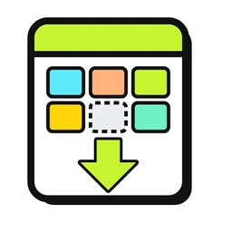
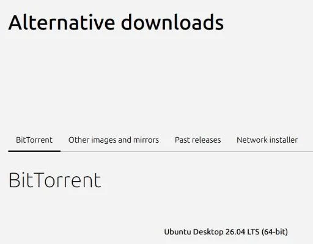
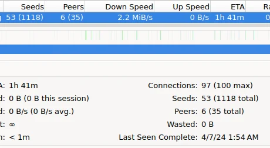
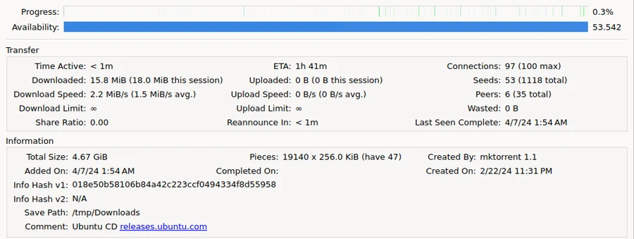

1
Installe qBittorrent
qbittorrent.org › Download
Télécharge-le uniquement sur qbittorrent.org (ou le Microsoft Store / ta logithèque Linux). Pas de pub, pas d'option payante.

Un fichier .torrent ne contient pas ton fichier : c'est une carte. Ton logiciel s'en sert pour récupérer des milliers de morceaux chez plein d'internautes à la fois, et vérifie chacun.

BitTorrent est une façon de télécharger inventée en 2001 par Bram Cohen. Au lieu de tout prendre sur un seul serveur, ton logiciel récupère le fichier en morceaux, chez toutes les personnes qui l'ont déjà ou le téléchargent en même temps (l'essaim). Le fichier .torrent n'est que la carte qui permet de les retrouver.
Le .torrent contient le nom, la taille, la liste des fichiers, la taille des morceaux, l'empreinte (un code unique) de chaque morceau et l'adresse d'un tracker. Exemple réel : Ubuntu 22.04 = 19 140 morceaux de 256 Kio.
Ce qu'il contientLes sources (seeds) ont le fichier entier. Les pairs (peers) le téléchargent, comme toi, et renvoient déjà les morceaux qu'ils ont.
Le vocabulaireTon logiciel compare chaque morceau reçu à son empreinte. Un morceau abîmé ou trafiqué est jeté et redemandé : à la fin, le fichier est identique à l'original.
FiableChacun envoie pendant qu'il reçoit : la charge est partagée au lieu de saturer un seul serveur. Le lien magnet fait la même chose avec seulement l'empreinte du torrent.
Le point fortExemple 100 % légal : télécharger Ubuntu en torrent avec qBittorrent, gratuit et open source (Windows, macOS, Linux).
Télécharge-le uniquement sur qbittorrent.org (ou le Microsoft Store / ta logithèque Linux). Pas de pub, pas d'option payante.
Sur la page Alternative downloads d'Ubuntu, onglet BitTorrent, clique sur Download à côté de la version voulue : tu récupères un petit fichier .torrent.

Double-clique sur le .torrent (ou Fichier › Ajouter un fichier torrent), choisis le dossier et valide. Les colonnes Sources et Pairs montrent combien de personnes t'envoient des morceaux.

L'onglet Général affiche la barre des morceaux (qui se remplit dans le désordre), leur nombre et leur taille (19 140 × 256 Kio) et l'empreinte du torrent (Info Hash).

Ubuntu, Fedora, Debian, Linux Mint : les grosses images ISO sont proposées en torrent officiel, souvent plus vite que le lien direct à la sortie d'une version.
Plus d'un million de livres, films et concerts du domaine public, avec un lien torrent sur chaque fiche.
Mistral AI a publié plusieurs modèles par simple lien magnet posté sur X (Mixtral 8x7B en 2023, Mixtral 8x22B en 2024).
Kiwix propose ses archives de Wikipédia (plusieurs dizaines de Go) en torrent, pour les lire sans connexion.
Outils › Créateur de torrent : partage une grosse vidéo de famille ou une sauvegarde entre tes machines, sans passer par un cloud.
Le protocole est le même partout ; ce qui change, c'est le logiciel qui l'utilise.
Bon pour : le plus complet : moteur de recherche intégré, RSS, créateur de torrent, aucune publicité.
Bon pour : le plus léger, souvent déjà installé sur Linux ; très simple.
Bon pour : longtemps le plus connu, mais publicités et offres payantes : préfère un client open source.

Chaque vidéo RepoPop Décode t'explique une fonction de ton IA en moins d'une minute, avec son kit comme celui-ci.